adalah konsep fundamental dalam statistik yang digunakan untuk menggambarkan kemungkinan terjadinya suatu peristiwa dan bagaimana peristiwa tersebut didistribusikan dalam ruang sampel. Peluang memberikan dasar untuk inferensi statistik dan pengambilan keputusan dalam kondisi ketidakpastian.
Peluang adalah ukuran yang digunakan untuk mengekspresikan kemungkinan terjadinya suatu peristiwa. Peluang dari sebuah peristiwa A dinotasikan sebagai P(A) dan dihitung sebagai rasio antara jumlah kejadian yang mendukung A dengan jumlah total kemungkinan kejadian.
Rumus Peluang: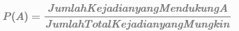
Misalnya, peluang mendapatkan angka 3 pada dadu adalah:
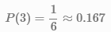
Di sini, jumlah total kejadian yang mungkin adalah 6 (karena dadu memiliki 6 sisi), dan hanya ada 1 kejadian yang mendukung mendapatkan angka 3.
Distribusi peluang adalah fungsi atau aturan yang memberikan kemungkinan bagi setiap hasil dalam ruang sampel suatu percobaan acak. Terdapat berbagai jenis distribusi peluang yang bergantung pada sifat variabel acak.
Distribusi Bernoulli menggambarkan percobaan yang hanya memiliki dua kemungkinan hasil: sukses (dengan probabilitas p) atau gagal (dengan probabilitas 1−p). Contoh klasik adalah melempar koin, di mana ada dua kemungkinan hasil: kepala atau ekor.
Misalkan kita ingin menghitung peluang mendapatkan kepala saat melempar koin sekali. Jika peluang mendapatkan kepala adalah 0.5, maka:
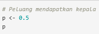
Distribusi binomial adalah generalisasi dari distribusi Bernoulli untuk n percobaan. Ini menggambarkan jumlah keberhasilan dalam sejumlah percobaan independen yang identik.
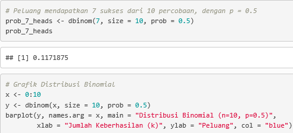
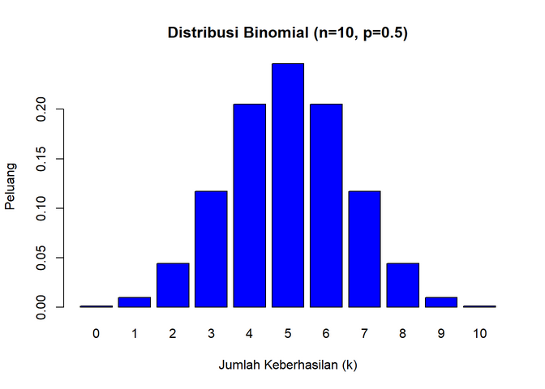
menggambarkan probabilitas dari k keberhasilan dalam n percobaan, tanpa penggantian, dari populasi yang memiliki K keberhasilan dalam total N elemen.
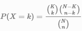
Misalkan kita memiliki dek kartu yang terdiri dari 52 kartu, di mana 4 di antaranya adalah As. Jika kita mengambil 5 kartu tanpa penggantian, kita ingin menghitung peluang mendapatkan tepat 2 As.
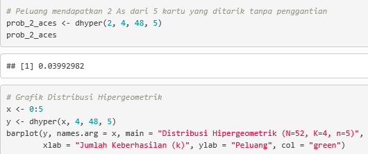
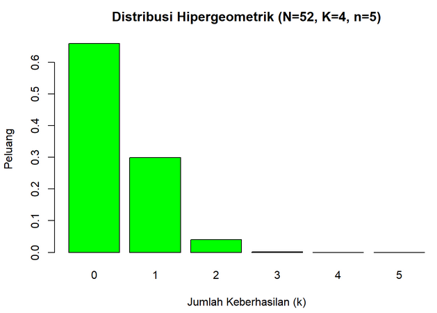
menggambarkan probabilitas sejumlah kejadian dalam interval waktu atau ruang yang tetap, dengan rata-rata kejadian yang diketahui. Ini sering digunakan untuk model kejadian langka.
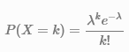
Di mana: λ adalah rata-rata jumlah kejadian dalam interval tertentu, k adalah jumlah kejadian yang ingin dihitung. Misalkan rata-rata jumlah pelanggan yang datang ke sebuah toko dalam satu jam adalah 5. Kita ingin mengetahui peluang bahwa 7 pelanggan akan datang dalam satu jam tertentu.
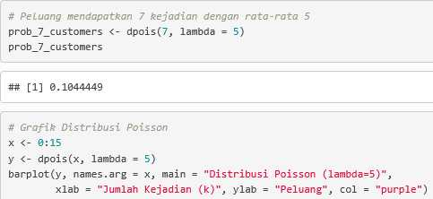
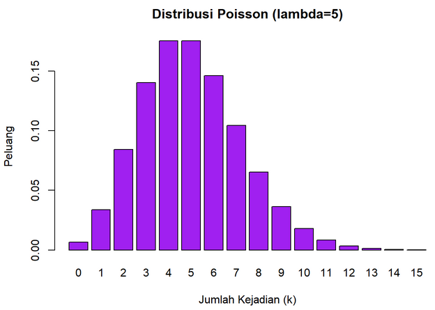
Distribusi normal adalah salah satu distribusi peluang yang paling penting dalam statistik. Distribusi ini bersifat simetris dan berbentuk lonceng (bell-shaped), dengan mean μ dan standar deviasi σ.
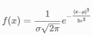
Misalkan tinggi badan pria dewasa mengikuti distribusi normal dengan mean 170 cm dan standar deviasi 10 cm. Kita ingin mengetahui peluang bahwa seorang pria memiliki tinggi kurang dari 180 cm.
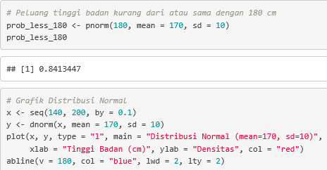
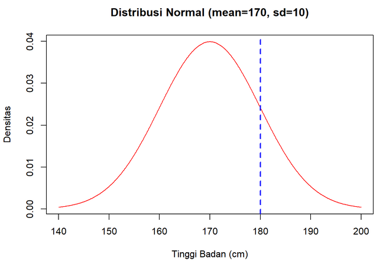
Dengan peluang 0.84 atau 84%, ini berarti bahwa 84% dari populasi pria dewasa diperkirakan memiliki tinggi badan kurang dari atau sama dengan 180 cm. Hasil ini juga menunjukkan bahwa tinggi 180 cm berada di atas rata-rata (170 cm), tetapi masih dalam kisaran yang umum di populasi pria dewasa tersebut. Secara praktis, jika kita memilih seorang pria secara acak dari populasi ini, ada kemungkinan 84% bahwa tingginya akan kurang dari atau sama dengan 180 cm.
Peluang dan distribusi peluang adalah konsep inti dalam statistik yang digunakan untuk menggambarkan dan menganalisis kejadian acak. Dengan memahami berbagai distribusi seperti Bernoulli, Binomial, Hipergeometrik, Poisson, dan Normal, kita dapat membuat prediksi dan keputusan berdasarkan data dan ketidakpastian.